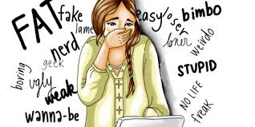

"A ação é virtual, mas a dor é real"
Definição
O cyberbullying é a prática da intimidação, humilhação, exposição vexatória, perseguição, calúnia e difamação por meio de ambientes virtuais, como redes sociais, e-mail e aplicativos de mensagens.
Origem da palavra
O vocábulo inglês bully significa “valentão” — aquela figura típica do agressor que persegue as suas vítimas na escola, colocando apelidos nelas e fazendo-as passar por situações vexatórias, por meio de agressões físicas e morais. O sufixo -ing acrescido ao termo bully é o que indica a condição da prática de bullying: a persistência e a continuidade. Já o prefixo cyber- vem da palavra cybernetic, que se refere àquilo que tem relação com a internet.